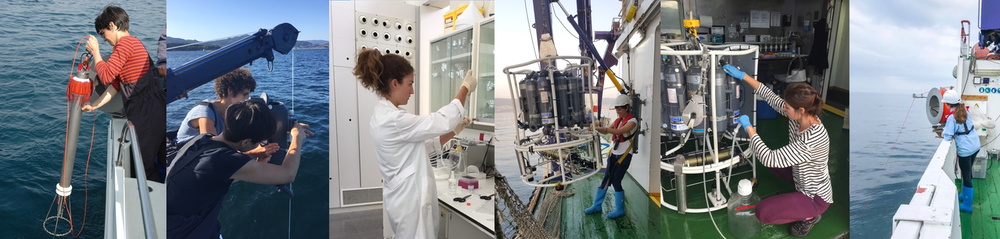

<!DOCTYPE html>
<html xmlns="http://www.w3.org/1999/xhtml" xml:lang="es" lang="es">
	<head>
		<meta charset="utf-8" />
		<meta http-equiv="X-UA-Compatible" content="IE=edge" />
				<title>Funding &amp; Publications | Beatriz Mouriño Carballido</title>
		<meta name="robots" content="all" />
		<meta name="generator" content="Sandvox 2.10.12" />
		<meta name="viewport" content="width=916" />
		<link rel="shortcut icon" type="image/x-icon" href="favicon.ico" />
		<link rel="image_src" href="./_Media/pasted-file-3_360.png" type="image/png" />
		<link rel="canonical" href="https://bmourino.webs.uvigo.es/cv.html" />
		
		<link rel="stylesheet" type="text/css" href="sandvox_BlackandWhite/main.css" title="Black &amp; White" />
		<!--
		Photo credits for this website's design: <https://bmourino.webs.uvigo.es/sandvox_BlackandWhite/Credits.rtf>
		Licensing for this website's design:     <https://bmourino.webs.uvigo.es/sandvox_BlackandWhite/License.rtf>
		-->
		
	</head>
	<body class="sandvox has-page-title no-sidebar no-custom-banner no-navigation no-IR" id="bmourino_webs_uvigo_es" >
				<div id="page-container">
			<div id="page">
				<div id="page-top" class="no-logo has-title has-tagline">
					<div id="title">
						<h1 class="title in"><a href="index.html"><span class="in"><span style="font-weight: normal; font-family: Helvetica;">Beatriz Mouriño Carballido</span><br /></span></a></h1>
						<p id="tagline"><span class="in"><span style="font-size: 14px; font-family: Helvetica;"><a href="http://gobio.webs.uvigo.es/">Grupo de Oceanografía Biológica (GOB)</a></span><br /></span></p>
					</div><!-- title -->
					<div id="sitemenu-container">
						<div id="sitemenu">
							<h2 class="hidden">Navegación del sitio<a href="#page-content" rel="nofollow">[Omitir]</a></h2>
							<div id="sitemenu-content">
								<ul>
									<li class="i1 o"><a href="index.html" title="Motivations"><span class="in">Inicio</span></a></li>
									<li class="i2 e currentPage"><span class="in">Funding &amp; Publications</span></li>
									<li class="i3 o"><a href="research/index.html" title="Outreach"><span class="in">Outreach</span></a></li>
									<li class="i4 e"><a href="teaching--mentoring.html" title="Teaching &amp; Mentoring"><span class="in">Teaching &amp; Mentoring</span></a></li>
									<li class="i5 o last-item last"><a href="team/index.html" title="Team"><span class="in">Team</span></a></li>
								</ul>
							</div> <!-- /sitemenu-content -->
						</div> <!-- /sitemenu -->
					</div> <!-- sitemenu-container -->
				</div> <!-- page-top -->
				<div class="clear below-page-top"></div>
				<div id="page-content" class="no-navigation">
					<div id="main">
						<div id="main-top"></div>
						<div id="main-content">
							<h2 class="title"><span class="in"><span style="font-weight: normal; font-family: Helvetica;">Funding &amp; Publications</span></span></h2>
							<div class="article">
								<div class="article-content">
									<div class="RichTextElement">
										<div>
											<div class="first graphic-container wide center ImageElement">
												<div class="graphic">
													<div class="figure-content">
														<!-- sandvox.ImageElement --><span data-img-src="_Media/pasted-file-3_med.png" data-img-src-hr="_Media/pasted-file-3_med_hr.png" data-alt="" data-width="1000" data-height="239" style="width:1000px; height:239px;">
															<noscript></noscript>
														</span>
														<!-- /sandvox.ImageElement -->
													</div>
												</div>
											</div>
											<p style="color: rgb(0, 0, 0);"><a name="Projects"><strong style="font-family: Helvetica; font-size: 15px;"><br /></strong></a></p><p style="color: rgb(0, 0, 0);"><a name="Projects"><strong style="font-family: Helvetica; font-size: 15px;">FUNDING</strong></a></p><p style="color: rgb(0, 0, 0);"><a name="Projects"><span style="font-family: Helvetica; font-size: 15px;"><strong>Recent and on-going projects</strong></span></a></p><ul><li><u><span style="color: rgb(4, 51, 255); font-size: 15px; font-family: Helvetica;"><a href="remedios_short.pdf">RolE of Mixing on phytoplankton bloom </a></span></u><u style="font-family: Helvetica; font-size: 15px;"><span style="color: rgb(4, 51, 255);"><a href="remedios_short.pdf">initiation, maintEnance and DIssipatiOn in the galician ríaS (REMEDIOS)</a> </span></u><span style="font-family: Helvetica; font-size: 15px;">(Ministerio de Economía y Competitividad, 2017-2020, 133K €). P.I: B. Mouriño</span></li><li><span style="font-family: Helvetica; font-size: 15px;"><a href="moreira-coellovictor_abstra.pdf"><span style="color: rgb(55, 79, 255);">Fijación de nitrógeno y flujo difusivo en el NO de la Península Ibérica (NICANOR)</span> </a>(Xunta de Galicia, 2013-2015, 73K €). P.I: B. Mouriño</span></li><li><span style="font-size: 15px;"><a href="mourino_carballido_beatriz_.pdf"><span style="color: rgb(30, 57, 255);">Control of tHe structure of marine phytoplAnkton cOmmunities by turbulence and nutrient supply dynamicS (CHAOS)</span> </a>(Ministerio de Economía y Competitividad, 2013-2015, 75K €). P. I.: B. Mouriño</span></li><li><span style="font-family: Helvetica; font-size: 15px;">Spatio-temporal variability in the synthesis, remineralization and export of organic carbon in the North Atlantic subtropical gyre (VARITROP) (Xunta de Galicia, 2009-2012, 72K €). P. I.: B. Mouriño </span></li></ul><p><a name="Education"><span style="color: rgb(17, 17, 17); font-family: Helvetica; font-size: 15px;"><br /></span></a></p><p style="color: rgb(0, 0, 0);"><strong style="font-family: Helvetica; font-size: 15px;">PUBLICATIONS</strong></p><p style="color: rgb(0, 0, 0);"><strong style="font-family: Helvetica; font-size: 15px;">Peer-review articles</strong></p><p><span style="color: rgb(0, 0, 0); font-family: Helvetica; font-size: 15px;">62. </span><span style="color: rgb(0, 0, 0); font-size: 15px; font-family: Helvetica;"> Velasco E,, Reguera B., Ramilo I., Casa G. Nogueira E., </span><span style="color: rgb(0, 0, 0);"><strong style="font-family: Helvetica; font-style: normal; font-size: 15px;">Mouriño-Carballido B. </strong></span><span style="font-style: normal; font-size: 15px; font-family: Helvetica; color: rgb(0, 0, 0);">Upwelling events, depth varying succesion of phytoplankton assemblages and vertical connectivity: a conceptual model. </span><span style="font-family: Helvetica; color: rgb(0, 0, 0); font-size: 15px;"><em>Under review in Science of the Total Environment.</em></span></p><p><span style="color: rgb(0, 0, 0); font-family: Helvetica; font-size: 15px;">61. </span><span style="color: rgb(0, 0, 0); font-size: 15px; font-family: Helvetica;"> Reboreda R., Souto C., GilCoto M., Fernández-Castro B., Nogueira N., Piedracova S., Broullón E.,</span><span style="font-size: 15px; font-family: Helvetica; color: rgb(0, 0, 0);"> </span><span style="font-family: Helvetica; color: rgb(0, 0, 0); font-size: 15px;"><strong>Mouriño-Carballido B. </strong></span><span style="font-size: 15px; font-family: Helvetica; color: rgb(0, 0, 0);">Study of Thin Layers of Phytoplankton in Upwelling Bays Using a High Resolution 3D Ocean Model.</span><span style="color: rgb(0, 0, 0); font-size: 15px; font-family: Helvetica;"> </span><span style="font-family: Helvetica; color: rgb(0, 0, 0); font-size: 15px;"><em>Under review in Journal of Marine Systems.<br /></em></span></p><p><span style="color: rgb(0, 0, 0); font-family: Helvetica; font-size: 15px;">60. </span><span style="color: rgb(0, 0, 0); font-size: 15px; font-family: Helvetica;"> </span><span style="font-size: 15px; font-family: Helvetica; color: rgb(0, 0, 0);">Fontela M., Fernández-Román D., Broullón B., Farnelid H., Fernández-Carrera A., Marañón E., Martínez-García S., Rodríguez-Ramos T., Varela M.M., </span><span style="font-family: Helvetica; color: rgb(0, 0, 0); font-size: 15px;"><strong>Mouriño-Carballido B. </strong></span><span style="color: rgb(0, 0, 0); font-size: 15px; font-family: Helvetica;">(2025). Puzzling out the ecological niche construction for nitrogen fixers in a coastal upwelling system, </span><span style="color: rgb(42, 73, 255); font-size: 15px; font-family: Helvetica;">ISME Communications, Volume 5, Issue 1, ycaf018, https://doi.org/10.1093/ismeco/ycaf018.</span><span style="font-size: 15px; font-family: Helvetica;"><br /></span></p><p><span style="color: rgb(0, 0, 0); font-family: Helvetica; font-size: 15px;">59. </span><span style="color: rgb(0, 0, 0); font-size: 15px; font-family: Helvetica;"> Tojeira, I., Souto, M., Kaufmann, M. et al. (2025). From physics to fish: 50 Years of research at Great Meteor Seamount, NE Atlantic. </span><span style="color: rgb(42, 73, 255); font-size: 15px; font-family: Helvetica;">Mar. Biodivers. 55, 10. https://doi.org/10.1007/s12526-024-01484-y</span><em><u><span style="color: rgb(4, 4, 4);"><strong style="font-family: Helvetica; font-size: 15px;"><br /></strong></span></u></em></p><p><span style="color: rgb(0, 0, 0); font-family: Helvetica; font-size: 15px;">58. </span><span style="color: rgb(0, 0, 0); font-size: 15px; font-family: Helvetica;"> </span><span style="font-size: 15px; font-family: Helvetica; color: rgb(0, 0, 0);">Zhibo Shao et al. Global oceanic diazotroph database version 2 and elevated estimate of global oceanic N2 fixation. </span><a href="essd-15-3673-2023.pdf"><u><em><span style="color: rgb(49, 51, 255); font-size: 15px; font-family: Helvetica;">Earth System Science Data 15(8):3673-3709, </span></em></u><span style="font-size: 15px; font-family: Helvetica; color: rgb(49, 51, 255);"><em><u>10.5194/essd-15-3673-2023</u></em></span><u><span style="font-size: 15px; font-family: Helvetica; color: rgb(49, 51, 255);"><em>. </em></span></u></a></p><p><span style="color: rgb(0, 0, 0); font-family: Helvetica; font-size: 15px;">57. </span><span style="color: rgb(0, 0, 0); font-size: 15px; font-family: Helvetica;"> </span><span style="font-size: 15px; font-family: Helvetica; color: rgb(0, 0, 0);">Broullón E., Franks P.J.S, </span><span style="color: rgb(0, 0, 0); font-family: Helvetica; font-size: 15px;">Fernández-Castro B</span><span style="font-size: 15px; font-family: Helvetica; color: rgb(0, 0, 0);">, Gilcoto M., Fuentes-Lema A., Pérez-Lorenzo M., Fernández E., </span><strong style="color: rgb(0, 0, 0); font-family: Helvetica; font-size: 15px;">Mouriño-Carballido B</strong><span style="font-size: 15px; font-family: Helvetica; color: rgb(0, 0, 0);">. Rapid phytoplankton response to wind forcing influences productivity in upwelling bays (2023). </span><span style="font-size: 15px; font-family: Helvetica;"><em><a href="limnol-oceanogr-letters--.pdf"><span style="color: rgb(43, 43, 255);">Limnology and Oceanography Letters, </span></a></em><a href="limnol-oceanogr-letters--.pdf" style="color: rgb(43, 43, 255);"><em>doi: 10.1002/lol2.10309</em>.</a></span><span style="color: rgb(43, 43, 255); font-size: 15px; font-family: Helvetica;"> </span><span style="font-family: Helvetica; font-size: 15px;"><a href="lol210309-sup-0001-supinfo.pdf" style="color: rgb(36, 47, 255);">Supporting Information.</a></span><span style="color: rgb(36, 47, 255); font-family: Helvetica; font-size: 15px;"> </span><span style="font-family: Helvetica; font-size: 15px;"><a href="https://aslopubs.onlinelibrary.wiley.com/doi/full/10.1002/lol2.10309"><span style="color: rgb(36, 47, 255);">Video Outreach.</span></a></span></p><p><span style="color: rgb(0, 0, 0); font-family: Helvetica; font-size: 15px;">56. </span><span style="color: rgb(0, 0, 0); font-size: 15px; font-family: Helvetica;"> </span><span style="font-size: 15px; font-family: Helvetica; color: rgb(0, 0, 0);">Fernández-Castro B., Peña M., Nogueira E., Gilcoto M., Broullón E., Comsesaña A., Bouffard D., Naveira Garabato A., </span><strong style="color: rgb(0, 0, 0); font-family: Helvetica; font-size: 15px;">Mouriño-Carballido B</strong><span style="font-size: 15px; font-family: Helvetica; color: rgb(0, 0, 0);">. Efficient biological ocean mixing in fish spawning aggregations (2022). </span><u><span style="font-family: Helvetica; font-size: 15px;"><em><a href="fernandez_etal_ng_2022.pdf"><span style="color: rgb(20, 31, 255);">Nature Geoscience 15, 287–292, https://doi.org/10.1038/s41561-022-00916-3.</span></a></em></span><em><span style="color: rgb(24, 77, 255); font-family: Helvetica; font-size: 15px;"> </span></em><span style="font-family: Helvetica; font-size: 15px;"><em><a href="https://www.youtube.com/watch?v=f-fosxKyzQ8" style="color: rgb(24, 77, 255);">Outreach.</a></em></span><em><span style="color: rgb(24, 77, 255); font-family: Helvetica; font-size: 15px;"> </span></em><span style="font-family: Helvetica; font-size: 15px;"><em><a href="https://facultyopinions.com/article/741968381" style="color: rgb(24, 77, 255);">Recommended by Faculty Opinions.</a></em><br /></span></u></p><p><span style="color: rgb(0, 0, 0); font-family: Helvetica; font-size: 15px;">55. </span><span style="color: rgb(0, 0, 0); font-size: 15px; font-family: Helvetica;"> </span><span style="font-size: 15px; font-family: Helvetica; color: rgb(0, 0, 0);">Villamaña M., Franks </span><span style="color: rgb(0, 0, 0); font-family: Helvetica; font-size: 15px;">P.J.S. </span><span style="font-size: 15px; font-family: Helvetica; color: rgb(0, 0, 0);">, Fernández-Castro B., Gilcoto M., Marañón E., </span><span style="font-family: Helvetica; color: rgb(0, 0, 0); font-size: 15px;"><strong>Mouriño-Carballido B.</strong></span><span style="font-size: 15px; font-family: Helvetica; color: rgb(0, 0, 0);"> A pseudo-Lagrangian Transformation to Study a  Chlorophyll-a Patch in the Ría de Vigo (NW Iberian 3 Peninsula) (2021).</span><span style="color: rgb(42, 74, 255); font-size: 15px; font-family: Helvetica;"> </span><a href="2021jc017455.pdf"><em style="font-family: Helvetica; font-size: 15px;"><span style="color: rgb(42, 74, 255);">Journal of Geophysical Research, </span></em><em><span style="color: rgb(42, 74, 255); font-size: 15px; font-family: Helvetica;">126, e2021JC017455,  https://doi.org/10.1029/2021JC017455, </span></em></a><span style="font-size: 15px; font-family: Helvetica; color: rgb(42, 74, 255);"><em><u>http://hdl.handle.net/11093/3132</u></em></span><a href="2021jc017455.pdf"><span style="font-size: 15px; font-family: Helvetica;"><em>.</em></span></a> <span style="font-family: Helvetica; color: rgb(0, 0, 0); font-size: 15px;"><strong><a href="agu_suppinfo_bmetal.docx">Supporting Information S1.</a> <a href="prueba.gif">Movie S1</a><a href="ms01.pptx">.</a></strong></span></p><p><span style="color: rgb(0, 0, 0); font-family: Helvetica; font-size: 15px;">54. </span><span style="color: rgb(0, 0, 0); font-size: 15px; font-family: Helvetica;"> </span><span style="font-family: Helvetica; color: rgb(0, 0, 0); font-size: 15px;"><strong>Mouriño-Carballido B., </strong></span><span style="font-size: 15px; font-family: Helvetica; color: rgb(0, 0, 0);">Otero Ferrer J.L., Fernández-Castro B., </span><span style="color: rgb(0, 0, 0); font-family: Helvetica; font-size: 15px;">Marañón E., </span><span style="color: rgb(0, 0, 0); font-size: 15px; font-family: Helvetica;">Blazquez Maseda M., Aguiar-González B., Chouciño P., Graña R., Moreira-Coello V., Villamaña M. (2021) Magnitude of nitrate turbulent diffusion in contrasting marine environments. </span><span style="font-size: 15px; font-family: Helvetica;"><em><a href="s41598-021-97731-4.pdf"><span style="color: rgb(33, 80, 255);">Scientific Reports 11, 18804 (2021). https://doi.org/10.1038/s41598-021-97731-4.</span></a></em></span></p><p><span style="color: rgb(0, 0, 0); font-family: Helvetica; font-size: 15px;">53. </span><span style="color: rgb(0, 0, 0); font-size: 15px; font-family: Helvetica;"> </span><span style="font-size: 15px; font-family: Helvetica; color: rgb(0, 0, 0);">Comesaña A., Fernández-Castro B., Chouciño P., Fernández E., Fuentes_Lema A., Gilcoto M., Pérez-Lorenzo M., </span><span style="font-family: Helvetica; color: rgb(0, 0, 0); font-size: 15px;"><strong>Mouriño-Carballido B. </strong>(2021)</span><span style="font-size: 15px; font-family: Helvetica; color: rgb(0, 0, 0);"> </span><span style="color: rgb(0, 0, 0); font-family: Helvetica; font-size: 15px;"> Mixing </span><span style="font-size: 15px; font-family: Helvetica; color: rgb(0, 0, 0);">and Phytoplankton Growth in an </span><span style="color: rgb(0, 0, 0); font-family: Helvetica; font-size: 15px;">Upwelling System. </span><em><span style="font-family: Helvetica; font-size: 15px;"><a href="fmars-08-712342.pdf"><span style="color: rgb(32, 65, 255);">Frontiers in Marine Science. 8:712342. </span></a></span><span style="font-size: 15px; font-family: Helvetica;"><a href="fmars-08-712342.pdf"><span style="color: rgb(32, 65, 255);">doi: 10.3389/fmars.2021.712342.</span></a></span></em><span style="font-style: italic; color: rgb(0, 0, 0); font-size: 15px; font-family: Helvetica;"><br /></span></p><p><span style="color: rgb(0, 0, 0); font-family: Helvetica; font-size: 15px;">52. </span><span style="color: rgb(0, 0, 0); font-size: 15px; font-family: Helvetica;"> </span><span style="font-size: 15px; font-family: Helvetica; color: rgb(0, 0, 0);">Landolfi A., Rabouille S. and </span><span style="font-family: Helvetica; color: rgb(0, 0, 0); font-size: 15px;"><strong>Mouriño-Carballido B. </strong>(2021).<strong> </strong></span><span style="color: rgb(0, 0, 0); font-size: 15px; font-family: Helvetica;">Editorial: Marine N2 Fixation: Recent Discoveries and Future Challenges. </span><span style="font-size: 15px; font-family: Helvetica;"><a href="fmars-08-664195.pdf"><em><span style="color: rgb(64, 95, 255);">Frontiers in Marine Science, 8:664195. doi: 10.3389/fmars.2021.664195.</span></em></a></span><span style="font-style: italic; color: rgb(0, 0, 0); font-size: 15px; font-family: Helvetica;"><br /></span></p><p><span style="color: rgb(0, 0, 0); font-family: Helvetica; font-size: 15px;">51. </span><span style="color: rgb(0, 0, 0); font-size: 15px; font-family: Helvetica;"> </span><span style="font-size: 15px; font-family: Helvetica; color: rgb(0, 0, 0);">Broullón E., López-Mozosa M., Reguera B., Chouciño P., Dolores Doval M., Fernández-Castro B., Gilcoto M., Nogueira E., Souto C., </span><span style="color: rgb(0, 0, 0);"><strong style="font-family: Helvetica; font-size: 15px;">Mouriño-Carballido B. </strong></span><span style="font-family: Helvetica; font-size: 15px; color: rgb(0, 0, 0);">(2020)</span><span style="font-size: 15px; font-family: Helvetica; color: rgb(0, 0, 0);">. Thin layers of phytoplankton and harmful algae events in a coastal upwelling system. </span><a href="1-s20-s0079661120301877.pdf"><span style="color: rgb(75, 108, 255);"><em style="font-family: Helvetica; font-size: 15px;">Progress in Oceanography, 189, </em></span><span style="font-size: 15px; font-family: Helvetica; color: rgb(75, 108, 255);"><em>doi.org/10.1016/j.pocean.2020.102449</em></span><span style="font-family: Helvetica; font-size: 15px; font-style: italic; color: rgb(75, 108, 255);">.</span></a> <span style="color: rgb(0, 0, 0); font-size: 15px;"><a href="1-s20-s0079661120301877.docx"><span style="font-family: Helvetica;"><strong>Supplementary Material.</strong></span></a></span></p><p><span style="color: rgb(0, 0, 0); font-family: Helvetica; font-size: 15px;">50. Montes T., Guerrero-Feijóo E., Bode A., Ruiz-Villareal M., </span><strong style="color: rgb(0, 0, 0); font-family: Helvetica; font-size: 15px;">Mouriño-Carballido B.</strong><span style="color: rgb(0, 0, 0); font-family: Helvetica; font-size: 15px;">, Moreira-Coello V. and Varela M. (2020). </span><span style="font-size: 15px; font-family: Helvetica; color: rgb(0, 0, 0);">Vertical variability of bacterioplankton during the summer relaxation of the coastal upwelling off Galicia (NW Spain). </span><em><span style="font-size: 15px; font-family: Helvetica;"><a href="50montesetal_2020.pdf"><span style="color: rgb(51, 112, 255);">Estuarine, Coastal and Shelf Science, 245, https://doi.org/10.1016/j.ecss.2020.106791.</span></a></span></em></p><p><span style="color: rgb(0, 0, 0); font-family: Helvetica; font-size: 15px;">49. </span><span style="color: rgb(0, 0, 0); font-size: 15px; font-family: Helvetica;"> </span><span style="font-size: 15px; font-family: Helvetica; color: rgb(0, 0, 0);">Villamaña V., Cermeño P., Estrada M., Fernández-Castro B., Figueiras F.G., Latasa M., Otero-Ferrera J.L, Reguera B., Marañón E., </span><span style="font-family: Helvetica; color: rgb(0, 0, 0); font-size: 15px;"><strong>Mouriño-Carballido B. </strong>(2019)</span><span style="font-size: 15px; font-family: Helvetica; color: rgb(0, 0, 0);">. The role of mixing in controlling resource availability and phytoplankton community composition. </span><em><a href="1-s20-s0079661118303653.pdf"><span style="color: rgb(47, 97, 255); font-family: Helvetica; font-size: 15px;">Progress in Oceanography</span><span style="font-size: 15px; font-family: Helvetica; color: rgb(47, 97, 255);">, 178, https://doi.org/10.1016/j.pocean.2019.102181.</span></a> </em><span style="font-size: 15px; font-family: Helvetica;"><strong><a href="suppl_figures.zip">Supplementary High Resolution Figures.</a></strong></span><span style="font-style: italic; font-size: 15px; font-family: Helvetica; color: rgb(0, 0, 0);"><br /></span></p><p><span style="color: rgb(0, 0, 0); font-family: Helvetica; font-size: 15px;">48. </span><span style="color: rgb(0, 0, 0); font-size: 15px; font-family: Helvetica;"> Moreira-Coello V. , </span><span style="color: rgb(0, 0, 0); font-family: Helvetica; font-size: 15px;"><strong>Mouriño-Carballido B</strong></span><span style="font-size: 15px; font-family: Helvetica; color: rgb(0, 0, 0);">., Marañón E., Fernández-Carrera, Pérez-Lorenzo M., A., Bode A (2019). Quantifying the overestimation of planktonic N2 fixation due to contamination of 15N2 gas stocks. </span><a href="moreira-coello-et-al-2019.pdf"><em><span style="color: rgb(49, 108, 255); font-size: 15px; font-family: Helvetica;">Journal of Plankton Research, </span></em><span style="font-size: 15px; font-family: Helvetica; color: rgb(49, 108, 255);"><em>00(00):1–4.doi:10.1093/plankt/fbz034.</em></span></a></p><p><span style="color: rgb(0, 0, 0); font-family: Helvetica; font-size: 15px;">47. </span><span style="font-size: 15px; font-family: Helvetica; color: rgb(0, 0, 0);"> Díaz P., Ruiz-Villarreal M., Rodríguez R., Garrido J.L., </span><strong style="color: rgb(0, 0, 0); font-family: Helvetica; font-size: 15px;">Mouriño-Carballido B, </strong><span style="font-size: 15px; font-family: Helvetica; color: rgb(0, 0, 0);">Riobó P., Reguera B (2019). Fine scale physical-biological interactions during a shift from relaxation to upwelling with a focus on Dinophysis acuminata and its potential ciliate prey. </span><em><span style="font-family: Helvetica; font-size: 15px;"><a href="2019_diaz_etal_pio.pdf"><span style="color: rgb(37, 110, 255);">Progress in Oceanography, 175, 309-327.</span></a></span></em><span style="font-size: 15px;"><em style="color: rgb(0, 0, 0); font-family: Helvetica;"><br /></em></span></p><p><span style="color: rgb(0, 0, 0); font-family: Helvetica; font-size: 15px;">46. </span><span style="font-size: 15px; font-family: Helvetica; color: rgb(0, 0, 0);"> Moreira-Coello V. , </span><span style="font-family: Helvetica; color: rgb(0, 0, 0); font-size: 15px;"><strong>Mouriño-Carballido B</strong></span><span style="font-size: 15px; font-family: Helvetica; color: rgb(0, 0, 0);">., Marañón E., Bode A., Sintes E., Zehr J.P., Turk-Kubo K, Varela M.M. (2019) Temporal variability of diazotroph community in the upwelling region off NW Iberia. </span><a href="moreira-coello_et_al-2019.pdf"><em><span style="font-size: 15px; font-family: Helvetica; color: rgb(60, 74, 255);">Scientific Reports, </span></em><span style="font-size: 15px; font-family: Helvetica; color: rgb(60, 74, 255);"><em> 9:3737, </em></span></a><em><span style="font-size: 15px; font-family: Helvetica;"><a href="moreira-coello_et_al-2019.pdf"><span style="color: rgb(60, 74, 255);">https://doi.org/10.1038/s41598-019-39586-4.</span></a></span><span style="color: rgb(41, 115, 255); font-size: 15px; font-family: Helvetica;"> </span></em><strong><span style="color: rgb(0, 0, 3); font-family: Helvetica; font-size: 15px;"><a href="41598_2019_39586_moesm1_esm.pdf"><span style="background-color: rgb(0, 0, 0); color: rgb(255, 255, 255);">Supplementary information</span>.</a></span></strong></p><p><span style="color: rgb(0, 0, 0); font-family: Helvetica; font-size: 15px;">45. </span><span style="font-size: 15px; font-family: Helvetica; color: rgb(0, 0, 0);">Fernández-Castro B., </span><span style="font-family: Helvetica; color: rgb(0, 0, 0); font-size: 15px;"><strong>Mouriño-Carballido B.</strong></span><span style="font-size: 15px; font-family: Helvetica; color: rgb(0, 0, 0);">, Álvarez-Salgado X.A. (2019) Non-refieldian mesopelagic nutrient remineralization in the eastern North Atlantic subtropical gyre. </span><a href="1-s20-s0079661118300338.pdf"><em><span style="font-family: Helvetica; font-size: 15px; color: rgb(17, 57, 255);">Progress in Oceanography, 171, 136-153, </span></em><span style="font-size: 15px; font-family: Helvetica; color: rgb(17, 57, 255);"><em>https://doi.org/10.1016/j.pocean.2018.12.001.</em></span></a><span style="font-size: 15px;"><em style="color: rgb(0, 0, 0); font-family: Helvetica;"><br /></em></span></p><p><span style="color: rgb(0, 0, 0); font-family: Helvetica; font-size: 15px;">44. </span><span style="font-size: 15px; font-family: Helvetica; color: rgb(0, 0, 0);">Otero-Ferrer J.L., Cermeño P., Fernández-Castro B., Gasol J.M., Morán X.AG., </span><span style="color: rgb(0, 0, 0); font-family: Helvetica; font-size: 15px;">Marañon, Moreira-Coello V., Varela M., Villamaña M., </span><span style="font-family: Helvetica; color: rgb(0, 0, 0); font-size: 15px;"><strong>Mouriño-Carballido B.</strong></span><span style="color: rgb(0, 0, 0); font-family: Helvetica; font-size: 15px;">. (2018). Factors controlling the community structure of picoplankton in contrasting marine environments. </span><em><u><span style="color: rgb(74, 117, 255); font-size: 15px; font-family: Helvetica;"><a href="bg-15-6199-2018.pdf">Biogeosciences, 15, 6199-6220, https://doi.org/10.5194/bg-15-6199-2018</a>.</span></u></em><span style="font-size: 15px;"><em style="color: rgb(0, 0, 0); font-family: Helvetica;"><br /></em></span></p><p><span style="color: rgb(0, 0, 0); font-family: Helvetica; font-size: 15px;">43. </span><span style="font-size: 15px; font-family: Helvetica; color: rgb(0, 0, 0);"> Fernández-Castro B., Gilcoto M., Naveira-Garabato A., Villamaña M., Graña R., </span><span style="font-family: Helvetica; color: rgb(0, 0, 0); font-size: 15px;"><strong>Mouriño-Carballido B</strong></span><span style="font-size: 15px; font-family: Helvetica; color: rgb(0, 0, 0);">. (2018). Modulation of the semidiurnal cycle of turbulent dissipation by </span><span style="color: rgb(0, 0, 0); font-family: Helvetica; font-size: 15px;">wind-driven upwelling in a coastal embayment. </span><a href="publicado_2017jc013582.pdf"><em><span style="color: rgb(23, 80, 255); font-family: Helvetica; font-size: 15px;">Journal of Geophysical Research, </span></em><span style="font-size: 15px; font-family: Helvetica; color: rgb(56, 106, 255);"><em>123. https://doi.org/</em></span><span style="color: rgb(56, 106, 255);"><em style="font-family: Helvetica; font-size: 15px;">10.1002/2017JC013582.</em></span></a></p><p><span style="color: rgb(0, 0, 0); font-family: Helvetica; font-size: 15px;">42. </span><span style="font-size: 15px; font-family: Helvetica; color: rgb(0, 0, 0);"> Marañón E., Pérez-Lorenzo M., Cermeño E., </span><span style="color: rgb(0, 0, 0);"><strong style="font-family: Helvetica; font-size: 15px;">Mouriño-Carballido B. </strong></span><span style="font-size: 15px; font-family: Helvetica; color: rgb(0, 0, 0);">(2018). Nutrient limitation suppresses the temperature dependence of phytoplankton metabolic rates. </span><a href="mara--n_et_al-2018-the_isme.pdf"><em><span style="color: rgb(43, 107, 255); font-family: Helvetica; font-size: 15px;">The ISME Journal</span><span style="font-family: Helvetica; font-size: 15px; color: rgb(43, 107, 255);">, </span></em><span style="font-size: 15px; font-family: Helvetica; color: rgb(43, 107, 255);"><em>doi:10.1038/s41396-018-0105-1.</em></span></a> <strong><span style="color: rgb(0, 0, 3); font-family: Helvetica; font-size: 15px;"><a href="41396_2018_105_moesm1_esm.docx">Supplementary information</a>. <a href="41396_2018_105_moesm2_esm.xlsx">Dataset 1</a></span></strong><span style="font-size: 15px;"><em style="color: rgb(0, 0, 0); font-family: Helvetica;"><br /></em></span></p><p><span style="color: rgb(0, 0, 0); font-family: Helvetica; font-size: 15px;">41. </span><span style="font-size: 15px; font-family: Helvetica; color: rgb(0, 0, 0);"> Moreira-Coello V. , </span><span style="font-family: Helvetica; color: rgb(0, 0, 0); font-size: 15px;"><strong>Mouriño-Carballido B</strong></span><span style="font-size: 15px; font-family: Helvetica; color: rgb(0, 0, 0);">., Marañón E., Fernández-Carrera A., Bode A., Varela M.M. (2017). Biological N2 fixation in the upwelling region off NW Iberia: magnitude, relevance and players. </span><a href="fmars-04-00303.pdf"><em><span style="color: rgb(24, 66, 255); font-family: Helvetica; font-size: 15px;">Frontiers in Marine Science, </span></em><span style="font-size: 15px; font-family: Helvetica; color: rgb(24, 66, 255);"><em>4:303. doi: 10.3389/fmars.2017.00303</em></span></a><em><span style="font-size: 15px; font-family: Helvetica; color: rgb(19, 78, 255);">.</span></em></p><p><span style="color: rgb(0, 0, 0); font-family: Helvetica; font-size: 15px;">40. </span><span style="font-family: Helvetica; color: rgb(0, 0, 0); font-size: 15px;">Villamaña M., <strong>Mouriño-Carballido B</strong>., Marañón E., Cermeño P., Chouciño P.,  da Silva J., Díaz, P.A., Fernández-Castro B., Gilcoto M., Graña R., Latasa M., Magalhaes J.,  Otero-Ferrer J.L., Reguera B., Scharek R. (2017). Role of internal waves on mixing, nutrient supply and phytoplankton community structure during spring and neap tides in the Ría de Vigo (NW Iberian Peninsula). </span><a href="lno104822.pdf"><em style="font-family: Helvetica;"><span style="color: rgb(26, 63, 255); font-size: 15px;">Limnology and Oceanography, </span></em><span style="font-size: 15px; font-family: Helvetica; color: rgb(23, 61, 255);"><em>00: 1-17, doi: 10.1002/lno.10482</em></span><span style="font-size: 15px; color: rgb(23, 61, 255);"><em style="font-family: Helvetica;">.</em></span></a> <span style="font-style: normal; font-size: 14px; font-family: Helvetica;"><strong><a href="lno10482-sup-0001-suppinfof.tif">Supplementary Figure 1. </a><a href="lno10482-sup-0002-suppinfof.tif">Supplementary Figure 2.</a></strong></span></p><p><span style="color: rgb(0, 0, 0); font-family: Helvetica; font-size: 15px;">39. </span><span style="font-family: Helvetica; color: rgb(0, 0, 0); font-size: 15px;">Sangrá P., Stegner  A., Hernández-Arencibia M., Marrero-Díaz A., Salinas C., Aguiar-González B., Henríquez-Pastene C., </span><strong style="font-size: 15px; color: rgb(0, 0, 0); font-family: Helvetica;">Mouriño-Carballido B </strong><span style="color: rgb(0, 0, 0); font-family: Helvetica; font-size: 15px;">(2017). </span><span style="color: rgb(0, 0, 1); font-family: Helvetica; font-size: 15px;">The Bransfield Gravity Current.</span><span style="color: rgb(24, 86, 255); font-family: Helvetica; font-size: 15px;"> </span><em style="font-family: Helvetica;"><span style="font-size: 15px;"><a href="1-s20-s0967063716303740.pdf"><span style="color: rgb(33, 87, 255);">Deep-Sea Research I, 119, 1-15.</span></a></span></em><span style="font-family: Helvetica; color: rgb(0, 0, 0); font-size: 15px;"><em><br /></em></span></p><p><span style="color: rgb(0, 0, 0); font-family: Helvetica; font-size: 15px;">38. </span><span style="font-family: Helvetica; color: rgb(0, 0, 0); font-size: 15px;">P. Cermeño, P. Chouciño, B. Fernández-Castro, F. G. Figueiras, E. Marañón, C. Marrasé, </span><strong style="font-size: 15px; color: rgb(0, 0, 0); font-family: Helvetica;">B. Mouriño-Carballido </strong><span style="font-family: Helvetica; color: rgb(0, 0, 0); font-size: 15px;">(2016)</span><span style="color: rgb(0, 0, 0); font-family: Helvetica; font-size: 15px;">, M. Pérez-Lorenzo, T. Rodríguez-Ramos, I. G. Teixeira, S. M. Vallina. </span><span style="font-size: 15px; font-family: Helvetica; color: rgb(0, 0, 0);">Marine primary productivity is driven by a selection effect</span><span style="font-size: 15px; font-family: Helvetica; color: rgb(40, 92, 255);">. </span><span style="font-family: Helvetica; font-size: 15px;"><em><a href="fmars-03-00173.pdf"><span style="color: rgb(40, 92, 255);">Frontiers in Marine Science, </span></a></em></span><a href="fmars-03-00173.pdf"><em><span style="color: rgb(40, 92, 255); font-size: 15px; font-family: Helvetica;">3:173. doi: 10.3389/fmars.2016.00173</span></em><span style="font-family: Helvetica; font-size: 15px; color: rgb(40, 92, 255);"><em>.</em></span></a></p><p><span style="color: rgb(0, 0, 0); font-family: Helvetica; font-size: 15px;">37. </span><span style="font-family: Helvetica; color: rgb(0, 0, 0); font-size: 15px;">Mompeán C., A. Bode A., M. Latasa M., B. Fernández-Castro, </span><span style="font-size: 15px;"><strong style="color: rgb(0, 0, 0); font-family: Helvetica;">Mouriño-Carballido</strong></span><span style="font-family: Helvetica; color: rgb(0, 0, 0); font-size: 15px;"> B., X. Irigoien (2016). Nitrogen inputs influence on biomass and trophic structure of ocean plankton: a study using biomass and stable isotope size-spectra. </span><a href="j-plankton-res-2016-mompean.pdf"><em style="font-family: Helvetica;"><span style="color: rgb(32, 68, 255); font-size: 15px;">Journal of Plankton Research, </span></em><span style="font-size: 15px; font-family: Helvetica; color: rgb(32, 68, 255);"><em>00(00): 1</em></span><span style="color: rgb(32, 68, 255);"><em style="font-family: Helvetica; font-size: 15px;">–15. doi:10.1093/plankt/fbw052.</em></span></a></p><p><span style="color: rgb(0, 0, 0); font-family: Helvetica; font-size: 15px;">36. </span><span style="font-family: Helvetica; color: rgb(0, 0, 0); font-size: 15px;">B. Fernández-Castro, M. Pahlow, <strong>B. Mouriño-Carballido</strong>, E. Marañón, A. Oschlies (2016).</span><span style="color: rgb(0, 0, 0); font-family: Helvetica; font-size: 15px;"> </span><span style="font-family: Helvetica; color: rgb(0, 0, 0); font-size: 15px;">Optimality-based Trichodesmium Diazotrophy in the North Atlantic Subtropical Gyre. </span><span style="font-size: 15px;"><a href="j-plankton-res-2016-fernand.pdf"><em style="font-family: Helvetica;"><span style="color: rgb(45, 59, 255);">Journal of Plankton Research, DOI: </span></em><span style="font-family: Helvetica; color: rgb(45, 59, 255);"><em>10.1093/plankt/fbw047</em></span><span style="color: rgb(45, 59, 255);"><em style="font-family: Helvetica;">.</em></span></a></span></p><p><span style="color: rgb(0, 0, 0); font-family: Helvetica; font-size: 15px;">35. </span><span style="font-family: Helvetica; color: rgb(0, 0, 0); font-size: 15px;">B. Fernández-Castro, J. Arístegui, L. Anderson, M.F. Montero, S. Hernández-León, </span><span style="color: rgb(0, 0, 0); font-family: Helvetica; font-size: 15px;">E. Marañón, </span><span style="color: rgb(0, 0, 0); font-size: 15px;"><strong style="font-family: Helvetica;">B. Mouriño-Carballido </strong></span><span style="font-family: Helvetica; color: rgb(0, 0, 0); font-size: 15px;">(2016)</span><span style="color: rgb(0, 0, 0); font-family: Helvetica; font-size: 15px;">. </span><span style="font-family: Helvetica; color: rgb(0, 0, 0); font-size: 15px;">Mesopelagic respiration at the ESTOC (European </span><span style="color: rgb(0, 0, 0); font-family: Helvetica; font-size: 15px;">Station for Time-Series in the Ocean, 15.5 W, 29.1 N) site inferred from a tracer conservation model. </span><span style="font-size: 15px;"><em><a href="fernandez_castroetal_dsri20.pdf"><span style="color: rgb(4, 51, 255); font-family: Helvetica;">Deep-Sea Research I, 115, 63-73.</span></a><br /></em></span></p><p><span style="font-family: Helvetica; color: rgb(0, 0, 0); font-size: 15px;">34. <strong>Mouriño-Carballido, B.</strong>, Hojas, E., Cermeño, P., Chouciño, P., Fernández-Castro, B., Latasa, M., Marañón, E., Morán, X.A Vidal, M. (2016). Nutrient supply controls picoplankton community structure during three contrasting seasons in the northwestern Mediterranean Sea. </span><span style="font-size: 15px;"><a href="mourino_etal_2016_meps.pdf"><em><span style="font-family: Helvetica; color: rgb(34, 56, 255);">Marine Ecology Progress Series, DOI:</span></em><span style="font-family: Helvetica; color: rgb(34, 56, 255);"><em> 10.3354/meps11558</em></span></a>.</span></p><p><span style="color: rgb(0, 0, 0); font-family: Helvetica; font-size: 15px;">33. </span><span style="font-family: Helvetica; color: rgb(0, 0, 0); font-size: 15px;">B. Fernández-Castro, <strong>B. Mouriño-Carballido</strong>, E. Marañón, P. Chouciño, J. Gago, T. Ramírez, M. Vidal, A. Bode, D. Blasco, S.-J. Royer, M. Estrada, and R. Simó (2015).</span><span style="color: rgb(0, 0, 0); font-family: Helvetica; font-size: 15px;"> </span><span style="font-family: Helvetica; color: rgb(0, 0, 0); font-size: 15px;">Importance of salt fingering for new nitrogen supply in the oligotrophic oceans. </span><span style="font-size: 15px;"><a href="ncomms9002.pdf"><em style="font-family: Helvetica;"><span style="color: rgb(4, 51, 255);">Nature Communications, </span></em><em><span style="color: rgb(4, 51, 255); font-family: Helvetica;">DOI: 10.1038/ncomms9002.</span></em></a> </span><strong><span style="font-family: Helvetica; font-size: 15px;"><a href="ncomms9002-s1.pdf"><span style="color: rgb(0, 0, 3);">Supplementary material</span></a></span><span style="color: rgb(0, 0, 3); font-size: 15px;">.</span></strong></p><p><span style="font-family: Helvetica; font-size: 15px;">32. M. Estrada, M. Latasa, M. Emelianov, A. Gutiérrez-Rodríguez, B. Fernández-Castro, J. Isern-Fontanet, <strong>B. Mouriño-Carballido</strong>, J. Salat, M. Vidal (2014). Seasonal and short-term variability of primary production in the deep convection region of the NW Mediterranean. </span><span style="font-size: 15px;"><a href="estrada-et-al_14.pdf" target="_blank"><span style="font-family: Helvetica; color: rgb(30, 57, 255);"><em>Deep-Sea Research I, 94, 45-61.</em></span></a></span></p><p class="MsoNormal"><span style="font-family: Helvetica; font-size: 15px;">31. B. Fernández-Castro, <strong>B. Mourinño-Carballido</strong>, V. M. Benítez-Barrios, P. Chouciñ ̃o, E. Fraile-Nuez, R. Granña, M. Piedeleu, A. Rodr ́ıguez-Santana (2014). Microstructure turbulence and diffusivity parameterization in the tropical and subtropical Atlantic, Pacific and Indian Oceans during the Malaspina 2010 expedition. <em><a href="fernandez_castro_etal_2014.pdf" target="_blank"><span style="color: rgb(30, 57, 255);">Deep-Sea Research I, 94, 15-30.</span></a></em></span></p><p class="MsoNormal"><span style="font-family: Helvetica; font-size: 15px;">30. Marañón E., Cermeño P., Huete-Ortega M., López-Sandoval D., <strong>Mouriño-Carballido B.</strong>, Rodríguez-Ramos T. (2014). Resource supply overrides temperature as a controlling factor of marine phytoplankton growth<em>. </em></span><span style="font-size: 15px;"><a href="journalpone0099312.pdf" target="_blank"><em><span style="font-family: Helvetica; color: rgb(30, 57, 255);">PLOS one, </span></em><span style="font-family: Helvetica; color: rgb(30, 57, 255);">9 (6), e99312.</span></a></span></p><p class="MsoNormal"><span style="font-family: Helvetica; font-size: 15px;">29. P. Sangrà, C. García-Muñoz, B. Aguiar-González, C. Sean layer variability and sizeobrino, </span><span style="font-size: 15px;"><strong style="font-family: Helvetica;">B. Mour</strong></span><strong><span style="font-family: Helvetica; font-size: 15px;">iño-Carballido</span></strong><span style="font-family: Helvetica; font-size: 15px;">, A. Marrero-Díaz, C. Henríquez-Pastene , A. Rodríguez-Santana, L. M. Lubián, C. M. García, M. Hernández-Arencibia, S. Hernández-León, E. Vázquez , S. N. Estrada-Allis (2014). Coupling between upper ocean layer variability and size-fractionated phytoplankton in a non-nutrient-limited environment. </span><span style="font-size: 15px;"><a href="sangra_etal_meps_2014.pdf" target="_blank"><span style="color: rgb(30, 57, 255);"><em style="font-family: Helvetica;">Marine Ecology Progress Series, </em></span><span style="font-family: Helvetica; color: rgb(30, 57, 255);">499: 35–46.</span></a><em style="font-family: Helvetica;"><br /></em></span></p><p class="MsoNormal"><span style="font-family: Helvetica; font-size: 15px;">28. Teira E., <strong>Mouriño-Carballido B.</strong>, Martínez-García S., Sobrino C., Ameneiro J., Hernández-León S., Vázquez E (2012). Controls of primary production and bacterial carbon metabolism around South Shetland Islands. <a href="teira_etal_2012_dsri.pdf" target="_blank"><span style="color: rgb(30, 57, 255);"><em>Deep-Sea Research I</em> 69, 70-81. </span></a></span></p><p class="MsoNormal"><span style="font-family: Helvetica; font-size: 15px;">27. Luo Y.-W. et al (2012) Database of diazotrophs in global ocean: abundances, biomass and nitrogen fixation rates. <a href="luo_etal_2012_essd-4-47.pdf" target="_blank"><span style="color: rgb(30, 57, 255);"><em>Earth System Science Data, </em>4, 47–73. </span></a></span></p><p class="MsoNormal"><span style="font-family: Helvetica; font-size: 15px;">26. Fernández A., Graña R., <strong>Mouriño-Carballido B</strong>., Bode A., Varela M., Domínguez F.,  Escánez J., de Armas D., Marañón E (2012). Community N2 fixation and Trichodesmium spp. abundance along longitudinal gradients in the Eastern Subtropical North Atlantic. <em><a href="fernandez_carrera_etal_2012.pdf" target="_blank"><span style="color: rgb(30, 57, 255);">ICES Journal of Marine Science, doi: 10.1093/icesjms/fss142. </span></a></em></span></p><p class="MsoNormal"><span style="font-family: Helvetica; font-size: 15px;">25. Fernández-Castro B., Anderson L., Marañón E., Ausín B., Neuer S., González-Dávila M. Santana-Casiano M., Cianca A., Santana R., Llinás O., Rueda M.J., and <strong>Mouriño-Carballido B </strong>(2012). Regional differences in modelled net production and shallow remineralization in the North Atlantic subtropical Gyre. <a href="fernandez_castro_etal_2012_.pdf" target="_blank"><span style="color: rgb(30, 57, 255);"><em>Biogeosciences,</em> 9, 2831–2846. </span></a></span></p><p class="MsoNormal"><span style="font-family: Helvetica; font-size: 15px;">24. Ameneiro J., <strong>Mouriño-Carballido B.</strong>, Parapar J., Vázquez E (2012). Abundance and distribution of invertebrate larvae in the Bellingshausen Sea (West Antarctica). <a href="ameneiro_etal_2012.pdf" target="_blank"><span style="color: rgb(30, 57, 255);"><em>Polar Biology, </em>DOI 10.1007/s00300-012-1177-4. </span></a></span></p><p class="MsoNormal"><span style="font-family: Helvetica; font-size: 15px;">23. <strong>Mouriño-Carballido, B</strong>., Pahlow, M., Oschlies A. (2012) High sensitivity of ultra-oligotrophic marine ecosystems to atmospheric nitrogen deposition. <a href="mourino_etal_grl_2012.pdf" target="_blank"><span style="color: rgb(30, 57, 255);"><em>Geophysical Research Letters,</em> 39, L05601, doi:10.1029/2011GL050606.</span></a> </span></p><p class="MsoNormal"><span style="font-family: Helvetica; font-size: 15px;">22. Huete-Ortega, M., Calvo-Díaz A., Graña R., <strong>Mouriño-Carballido, B</strong>., Marañón E. (2011) Effect of environmental forcing on the biomass, production and growth rate of size-fractionated phytoplankton in the central Atlantic Ocean. </span><span style="font-size: 15px;"><em style="font-family: Helvetica;"><a href="huete_ortega_etal_jms_2011.pdf" target="_blank"><span style="color: rgb(30, 57, 255);">Journal of Marine Systems, </span></a></em></span><span style="font-family: Helvetica; font-size: 15px;"><a href="huete_ortega_etal_jms_2011.pdf" target="_blank"><span style="color: rgb(30, 57, 255);">88, 203–213.</span></a> </span></p><p class="MsoNormal"><span style="font-family: Helvetica; font-size: 15px;">21. <strong>Mouriño-Carballido, B.</strong>, Graña, R., Fernández, A., Bode, A., Varela, M., Domínguez, J. F., Escánez, J., de Armas, D., Marañón, E. (2011) Importance of N<sub>2</sub> fixation versus nitrate eddy diffusion along a latitudinal transect in the Atlantic Ocean. <a href="mourino_etal_2011_lo.pdf" target="_blank"><span style="color: rgb(30, 57, 255);"><em>Limnology and Oceanography</em>, 56(3), 2011, 999–1007. </span></a></span></p><p class="MsoNormal"><span style="font-family: Helvetica; font-size: 15px;">20. Moreno-Ostos, E., Fernández, A., Huete-Ortega, M., <strong>Mouriño-Carballido, B.</strong>, Calvo-Díaz, A., Morán, X. A. G., Marañón, E. (2011) Size-fractionated phytoplankton biomass and production in the tropical Atlantic. <a href="moreno-ostos-et-al-2011.pdf" target="_blank"><span style="color: rgb(30, 57, 255);"><em>Scientia Marina</em>, 75, 379-389. </span></a></span></p><p class="MsoNormal"><span style="font-family: Helvetica; font-size: 15px;">19. Marañón, E., Fernández, A., <strong>Mouriño-Carballido, B.</strong>, Martínez-García, S., Teira, E., Cermeño, P., Chouciño, P., Huete-Ortega, M., Fernández, E., Calvo-Díaz, A., Morán, X. A. G., Bode, A., Moreno-Ostos, E., Varela, M. M., Patey, M. D., Achterberg, E. P. (2010). Degree of oligotrophy controls the response of microbial plankton to Saharan dust. <a href="maranon_etal_2010_lo.pdf" target="_blank"><span style="color: rgb(30, 57, 255);"><em>Limnology and Oceanography</em>, 55, 2339-2352. </span></a></span></p><p class="MsoNormal"><span style="color: rgb(0, 0, 0); font-family: Helvetica; font-size: 15px;">18. Fernández, A., </span><span style="font-family: Helvetica; font-size: 15px;"><strong style="color: rgb(0, 0, 0);">Mouriño-Carballido, B.</strong></span><span style="color: rgb(0, 0, 0); font-family: Helvetica; font-size: 15px;">, Bode, A., Varela, M., Marañón, E. (2010) Latitudinal distribution of </span><span style="font-family: Helvetica; font-size: 15px;"><em style="color: rgb(0, 0, 0);">Trichodesmium</em></span><span style="color: rgb(0, 0, 0); font-family: Helvetica; font-size: 15px;"> spp. and N</span><span style="font-family: Helvetica; font-size: 15px;"><sub style="color: rgb(0, 0, 0);">2</sub></span><span style="color: rgb(0, 0, 0); font-family: Helvetica; font-size: 15px;"> fixation in the Atlantic Ocean. </span><span style="font-family: Helvetica; font-size: 15px;"><a href="fernandez_carrera_etal_2010.pdf" target="_blank"><span style="color: rgb(30, 57, 255);"><em>Biogeosciences</em>, 7, 3167–3176. </span></a></span></p><p class="MsoNormal"><span style="font-family: Helvetica; font-size: 15px;">17. <strong>Mouriño-Carballido B.</strong> &amp; Anderson L. (2009). Net community production of oxygen derived from in vitro in situ 1-D modeling techniques in a cyclonic mesoscale eddy in the Sargasso Sea. <a href="mourinoanderson_2009_bg.pdf" target="_blank"><span style="color: rgb(30, 57, 255);"><em>Biogeosciences</em> 6, 1799-1810. </span></a></span></p><p class="MsoNormal"><span style="font-family: Helvetica; font-size: 15px;">16. <strong>Mouriño-Carballido B.</strong> (2009) Eddy-driven pulses of respiration in the Sargasso Sea. <em><a href="mourino_2009_dsri.pdf" target="_blank"><span style="color: rgb(30, 57, 255);">Deep Sea Research Part I: Oceanographic Research Papers 56, 1242-1250.15. </span></a></em></span></p><p class="MsoNormal"><span style="font-family: Helvetica; font-size: 15px;">15. <strong>Mouriño B. </strong>&amp; Neuer S. (2008). Regional differences in the role of eddy pumping in the North Atlantic subtropical gyre: Historical conundrums revisited. <a href="mourinoneuer_2008_oceanogra.pdf" target="_blank"><span style="color: rgb(30, 57, 255);"><em>Oceanography</em> 21, 52-61. </span></a></span></p><p class="MsoNormal"><span style="font-family: Helvetica; font-size: 15px;">14. Marañón E., Pérez V., Fernández E., Anadón R., Bode A., González N., Huskin I., Isla A., Morán A, <strong>Mouriño-Carballido B.</strong>, Quevedo M., Robinson C., Serret P., Teira E., Varela M., Malcolm M., Woodward S. &amp; Zubkov, M. (2007). Planktonic carbon budget in the euphotic layer of the Eastern Subtropical North Atlantic. <a href="maranon_etal_ame_2007.pdf" target="_blank"><span style="color: rgb(30, 57, 255);"><em>Aquatic Microbial Ecology</em> 48, 261-275. </span></a></span></p><p class="MsoNormal"><span style="font-family: Helvetica; font-size: 15px;">13. Cianca A., Helmke P., <strong>Mouriño-Carballllido B.</strong>, Rueda M.J., Llinás O. &amp; Neuer S. (2007). Decadal analysis of hydrography and in situ nutrient budgets in the western and eastern North Atlantic subtropical gyre. <a href="cianca_et_al_2007.pdf" target="_blank"><span style="color: rgb(30, 57, 255);"><em>Journal of Geophysical Research</em> 112 (C7), C07025, 10.1029/2006JC003788. </span></a></span></p><p class="MsoNormal"><span style="font-family: Helvetica; font-size: 15px;">12. <strong>Mouriño-Carballido B.</strong> &amp; McGillicuddy D., 2006. Mesoscale variability in the metabolic balance of the Sargasso Sea. </span><span style="color: rgb(30, 57, 255);"><a href="mourino_mcg_06.pdf" target="_blank" style="font-family: Helvetica; font-size: 15px;"><em>Limnology &amp; Oceanography</em>, 51, 2675-2689. </a></span><span style="font-size: 15px; font-family: Helvetica; color: rgb(30, 57, 255);"><em><a href="limnology---oceanography--.pdf">Erratum.</a></em></span></p><p class="MsoNormal"><span style="font-family: Helvetica; font-size: 15px;">11. Teira E., <strong>Mouriño B</strong>., Marañón E., Pérez V., Pazó M.J., Serret P., Fernández P, 2005. Variability of chlorophyll and primary production in the Eastern North Atlantic subtropical gyre: potential factors affecting phytoplankton activity. <a href="teira-et-al-2005_dsri.pdf" target="_blank"><span style="color: rgb(30, 57, 255);"><em>Deep-Sea Research I</em>, 52: 569-588. </span></a></span></p><p class="MsoNormal"><span style="font-family: Helvetica; font-size: 15px;">10. <strong>Mouriño, B</strong>., E. Fernández, R. Pingree, B. Sinha, J. Escánez, D. de Armas, 2005. Constraining the effect of mesoscale features on the carbon budget of the photic layer in the NE subtropical Atlantic. <a href="mourino_et_al_2005_meps.pdf" target="_blank"><span style="color: rgb(30, 57, 255);"><em>Marine Ecology Progress Series</em>, 287: 45-52. </span></a></span></p><p class="MsoNormal"><span style="font-family: Helvetica; font-size: 15px;">9. Fernández E., Álvarez F., Anadón R., Barquero S., Bode A., García A., García-Soto C., Gil J., González N., Iriarte A., <strong>Mouriño B</strong>., Rodríguez F., Sánchez R., Teira E., Torres S., Valdés L., Varela M., Zapata M., 2004. An overview of the physical, chemical and ecological properties of a Slope Water anticyclonic Oceanic eddy (SWODDY) in the Sourthern Bay of Biscay. <a href="fernandez_etal_2004_jmba.pdf" target="_blank"><span style="color: rgb(30, 57, 255);"><em>Journal of Marine Biological Association</em>, UK, 84, 501-517. </span></a></span></p><p class="MsoNormal"><span style="font-family: Helvetica; font-size: 15px;">8. <strong>Mouriño, B</strong>., E. Fernández, Alves, M., 2004. Thermohaline structure, ageostrophic vertical velocity fields and phytoplankton distribution and production in the North East Atlantic subtropical front. <em>J<a href="mourino_et_al_2004_jgr.pdf" target="_blank"><span style="color: rgb(30, 57, 255);">ournal of Geophysical Research</span></a></em><a href="mourino_et_al_2004_jgr.pdf" target="_blank"><span style="color: rgb(30, 57, 255);">, 109, C04020, doi:10.1029/2003JC001990. </span></a></span></p><p class="MsoNormal"><span style="font-family: Helvetica; font-size: 15px;">7. <strong>Mouriño, B</strong>., E. Fernández, H. Etienne, F. Hernández, S. Giraud, 2003. Significance of cyclonic STORM (SubTropical Oceanic Rings of Magnitude) eddies for the carbon budget of the euphotic layer in the subtropical NE Atlantic. <a href="mourino_et_al_2003_jgr.pdf" target="_blank"><span style="color: rgb(30, 57, 255);"><em>Journal of Geophysical Research</em>, 108(C12), 3383. </span></a></span></p><p class="MsoNormal"><span style="font-family: Helvetica; font-size: 15px;">6. Marañón, E., Behrenfeld, M., González, N., <strong>Mouriño, B</strong>., Zubkov, M.V. 2003. High variability of primary production in the Atlantic subtropical gyres. <a href="maranon_et_al_2003_meps.pdf" target="_blank"><span style="color: rgb(30, 57, 255);"><em>Marine Ecology Progress Series</em>, 257: 1-11. </span></a></span></p><p class="MsoNormal"><span style="color: rgb(0, 0, 0); font-family: Helvetica; font-size: 15px;">5. </span><span style="font-family: Helvetica; font-size: 15px;"><strong style="color: rgb(0, 0, 0);">Mouriño, B</strong></span><span style="color: rgb(0, 0, 0); font-family: Helvetica; font-size: 15px;">., E. Fernández, J. Escánez, D. de Armas, S. Giraud, B. Sinha, R. Pingree. 2002. A SubTropical Oceanic Ring of Magnitude (STORM) in the Eastern North Atlantic: physical, chemical and biological properties. </span><span style="font-family: Helvetica; font-size: 15px;"><a href="mourino_et_al_2002_dsrii.pdf"><span style="color: rgb(30, 57, 255);"><em>Deep-Sea Research II</em>. 49 (19): 4003-4021. </span></a></span></p><p class="MsoNormal"><span style="font-family: Helvetica; font-size: 15px;">4. <strong>Mouriño, B</strong>., E. Fernández, P. Serret, B. Sinha, D. Harbour, R.D. Pingree. 2001. Variability and sesonality of physical and biological fields at the Great Meteor Seamount (Subtropical NE Atlantic). <a href="mourino_et_al_2001_oa.pdf" target="_blank"><span style="color: rgb(30, 57, 255);"><em>Oceanologica Acta</em>. 24(2). 167-185. </span></a></span></p><p class="MsoNormal"><span style="font-family: Helvetica; font-size: 15px;">3. Marañón, E., Holligan, P.M., Barciela, R., González, N., <strong>Mouriño, B</strong>., Pazó, M.J., Varela, M., 2001. Patterns of phytoplankton size structure and productivity in contrasting open-ocean enviroments. <a href="maranon_et_al_2001_meps.pdf" target="_blank"><span style="color: rgb(30, 57, 255);"><em>Marine Ecology  Progress Series</em>. 216: 43-56. </span></a></span></p><p class="MsoNormal"><span style="font-family: Helvetica; font-size: 15px;">2. González, N., R. Anadón, <strong>B. Mouriño</strong>, E. Fernández, B. Sinha, J. Escánez, D. de Armas. 2001. The metabolic balance of the planktonic community in the N. Atlantic Subtropical Gyre: The role of mesoscale instabilities. <a href="gonzalez_et_al_2001_lo.pdf" target="_blank"><span style="color: rgb(30, 57, 255);"><em>Limnology and Oceanography</em>. 46(4): 946-952. </span></a></span></p><p class="MsoNormal"><span style="font-family: Helvetica; font-size: 15px;">1. Marañón, E., Holligan, P.M., Varela, M., <strong>Mouriño, B</strong>., Bale, A.J., 2000. Basin-scale variability of phytoplankton biomass, production and growth in the Atlantic Ocean. </span><span style="color: rgb(30, 57, 255); font-family: Helvetica; font-size: 15px;"><a href="maranon_et_al_2000_dsri.pdf" target="_blank"><em>Deep-Sea Research I</em>. 47: 825-857. </a></span></p><p style="color: rgb(0, 0, 0);" class="MsoNormal"><br /></p><p style="color: rgb(0, 0, 0);" class="MsoCaption"><a name="Oral"><span style="font-family: Helvetica; font-size: 15px;"><strong>Recent oral presentations</strong></span></a></p><ol><li><span style="font-family: Helvetica; font-size: 15px; font-weight: bold;"><strong style="color: rgb(0, 0, 0);">Mouriño-Carballido B</strong></span><span style="font-weight: normal; color: rgb(0, 0, 0); font-family: Helvetica; font-size: 15px;">., </span><span style="color: rgb(0, 0, 0); font-size: 15px; font-family: Helvetica;">Broullón E., Comesaña A., Fernández-Castro B., Bouffard D., Chouciño P., Fernández E., Franks P.J.S., Fuentes-Lema A., <span style="color: rgb(17, 17, 17); font-family: Helvetica, Arial, sans-serif; font-size: 12.15999984741211px;"><span style="text-decoration: none; color: rgb(0, 0, 0); font-size: 15px; font-family: Helvetica;">Gilcoto M., López-Mozos M., Marigómez B., Naveira Garabato, Nogueira E., Peña M., Pérez-Lorenzo M., Reguera B., A.</span></span>Souto C., </span><span style="font-size: 15px; font-family: Helvetica;">(2024). <span style="font-family: Helvetica, Arial, sans-serif; font-size: 12.15999984741211px;"><span style="color: rgb(0, 0, 0); font-size: 15px; font-family: Helvetica;">RolE of Mixing on phytoplankton bloom </span></span></span><span style="color: rgb(0, 0, 0); font-size: 15px; font-family: Helvetica;">initiation, maintEnance and DIssipatiOn in the galician ríaS (REMEDIOS).</span><span style="color: rgb(66, 27, 255); font-size: 15px; font-family: Helvetica;"> </span><span style="font-size: 15px; font-family: Helvetica;"><u><a href="mourino_etal_isms24_v2.pdf"><span style="color: rgb(66, 27, 255);">VIII </span></a></u></span><u><span style="font-size: 15px; font-family: Helvetica;"><a href="mourino_etal_isms24_v2.pdf"><span style="color: rgb(66, 27, 255);">Encuentro de Oceanografía Física 2024, Valencia (Spain).</span></a></span></u></li><li><span style="font-size: 15px; font-family: Helvetica; color: rgb(0, 0, 0);">M. Fontela, D. Fernández-Román, H. Farnelid, A. Fernández- Carrera, E. Marañón, </span><span style="color: rgb(0, 0, 0); font-family: Helvetica; font-size: 15px;">S. Martínez-García, T. Rodríguez-Ramos, M. M. Varela, <strong>B. Mouriño-Carballido</strong> </span><span style="font-family: Helvetica; font-size: 15px;">(2024). Puzzling out the ecological niche construction for nitrogen fixers in a coastal upwelling system. </span><span style="font-size: 15px; font-family: Helvetica;"><a href="nifh_isms_poster99.pdf"><span style="color: rgb(66, 27, 255);">IX International Simposium of Marine Sciences, Valencia (Spain).</span></a></span></li><li><span style="font-size: 15px; font-family: Helvetica; color: rgb(0, 0, 0);">Fernández-Román D. ,M. Fontela, E Broullón, M.M. Varela, H. Farnelid, A.Fernández-Carrera, B.Fernández-Castro, S. Martínez, T Rodríguez-Ramos, <strong>B. Mouriño-Carballido</strong></span><span style="font-size: 15px; font-family: Helvetica;"><strong> </strong>(2024). Rapid response of diazotrophs to hydrography changes in an upwelling bay</span><span style="font-size: 14px; font-family: Helvetica;"><strong>.</strong></span><strong><span style="color: rgb(66, 27, 255); font-size: 14px; font-family: Helvetica;"> </span></strong><u><span style="font-size: 15px; font-family: Helvetica;"><a href="poster_isms_rapid_response_.pdf"><span style="color: rgb(66, 27, 255);">IX International Simposium of Marine Sciences, Valencia (Spain).</span></a></span></u></li><li><span style="color: rgb(0, 0, 0); font-family: Helvetica; font-size: 15px;">Broullón E., Fernández-Castro B., Souto C., </span><span style="font-family: Helvetica; font-size: 15px; font-weight: bold;"><strong style="color: rgb(0, 0, 0);">Mouriño-Carballido B</strong></span><span style="color: rgb(0, 0, 0); font-family: Helvetica; font-size: 15px;">.</span><span style="font-family: Helvetica; font-size: 15px; font-weight: bold;"> </span><span style="font-size: 15px; font-family: Helvetica;">(2023). Contrasting mixing conditions in adjacent upwelling bays influence the occurrence of harmful algae blooms</span><span style="font-weight: bold; font-family: Helvetica; font-size: 14px;">. </span><a href="poster230629_finalpdf.pdf"><span style="font-family: Helvetica; color: rgb(38, 67, 255); font-size: 15px;">Physics of the Ocean Workshop, </span><span style="font-size: 15px; font-family: Helvetica; color: rgb(38, 67, 255);">Bad Honnef (Germany).</span></a></li><li><span style="font-size: 15px; font-family: Helvetica;"><strong>B. Mouriño-Carballido</strong>, M. Villamaña, J.L. Otero , P. Cermeño, P. Chouciño, M. Estrada, </span><span style="font-family: Helvetica; font-size: 15px;">B. Fernández-Castro, F.G. Figueiras, J.M. Gasol, M. Latasa, E. Marañón, X.A.G. Morán, V. Moreira-Coello, B. Reguera, M. Varela</span><span style="font-size: 15px; font-family: Helvetica;"> (2019). </span><span style="font-family: Helvetica; font-size: 15px;">Why should plankton ecologists care about microturbulence?<a href="ts16_o2_mourino.pdf"> </a></span><u><a href="ts16_o2_mourino.pdf"><span style="color: rgb(24, 84, 255); font-family: Helvetica; font-size: 15px;">1<sup>st</sup> Meeting of the Iberian Ecological Society</span><span style="font-size: 15px; font-family: Helvetica; color: rgb(24, 84, 255);">, Barcelona (Spain)</span><span style="color: rgb(24, 84, 255);">.</span></a></u></li></ol><p><br /></p><p><br /></p><p style="font-size: 14px; font-family: Helvetica;"><a name="Education" style="font-family: Helvetica, Arial, sans-serif; font-size: 12px;"><span style="font-family: Helvetica; font-size: 15px;"><strong>EDUCATION</strong></span></a></p><ul><li><span style="font-family: Helvetica; font-size: 15px;"> BSc in Marine Sciences, University of Vigo (Spain), 1998 </span></li><li><span style="font-family: Helvetica; font-size: 15px;"> PhD in Oceanography, University of Vigo, 2002 </span></li></ul><p><span style="font-family: Helvetica; font-size: 15px;"><br /></span></p><p><a name="Education"><span style="font-family: Helvetica; font-size: 15px;"><strong>RESEARCH POSITIONS</strong></span></a></p><ul><li><span style="color: rgb(0, 0, 0); font-family: Helvetica; font-size: 15px;"><a name="Education">Fulbright Postdoctoral Fell</a>ow, Woods Hole Oceanographic Institution (USA), 2<a name="Education">003-2005</a></span></li><li><span style="color: rgb(0, 0, 0); font-family: Helvetica; font-size: 15px;">Juan de la Cierva Postdoctoral Fellow, University of Vigo (Spain), 2006-2008</span></li><li><span style="font-family: Helvetica; font-size: 15px;">Isidro Parga Pondal Researcher Fellow, University of Vigo (Spain), 2008-2011</span></li><li><span style="font-family: Helvetica; font-size: 15px;">Ramón y Cajal Researcher Fellow, University of Vigo (Spain), 2011-2014</span></li><li><span style="font-family: Helvetica; font-size: 15px;">Asociate Professor, University of Vigo (Spain), 2014-present</span></li></ul><p><span style="font-size: 15px; font-family: Helvetica;"><u><br /></u></span></p><p style="color: rgb(0, 0, 0);"><br /></p><p><span style="font-family: Helvetica; font-size: 15px;"><br /></span></p><p><br /></p><p><br /></p><p><br /></p><p><br /></p><p><br /></p><p style="text-align: left;"><br /></p><p style="text-align: left;"><br /></p><p style="text-align: left;"><br /></p><p style="color: rgb(0, 0, 0);" class="MsoNormal"><br /></p>
											
										</div>
									</div>
								</div> <!-- /article-content -->
								<div class="article-info">
								</div> <!-- /article-info -->
							</div> <!-- /article -->
						</div> <!-- main-content -->
						<div id="main-bottom"></div>
					</div> <!-- main -->
				</div> <!-- content -->
				<div class="clear below-content"></div>
				<div id="page-bottom">
					<div id="page-bottom-contents">
						<div><span style="font-family: Helvetica;"><em>Last updated May 2025</em></span></div>
						<div class="hidden"> <a rel="nofollow" href="#title">[Regresar al inicio]</a></div>
					</div>
				</div> <!-- page-bottom -->
			</div> <!-- container -->
			<div id="extraDiv1"><span></span></div><div id="extraDiv2"><span></span></div><div id="extraDiv3"><span></span></div><div id="extraDiv4"><span></span></div><div id="extraDiv5"><span></span></div><div id="extraDiv6"><span></span></div>
		</div> <!-- specific body type -->
		<script src="//ajax.aspnetcdn.com/ajax/jQuery/jquery-1.9.1.min.js"></script>
		<script>
		if (typeof jQuery === 'undefined') document.write('<scr'+'ipt src="_Resources/jquery-1.9.1.min.js"></scr'+'ipt>');
		</script>
		
		<script>
		$(document).ready(function(){var e=window.devicePixelRatio&&window.devicePixelRatio>1?window.devicePixelRatio:1,t=window.innerWidth>window.innerHeight?screen.height:screen.width;$("span[data-img-src-hr]").each(function(){var n=$(this).data("width"),r=$(this).data("height"),i=$(this).data("alt"),s='1&&n<2*t,u=0,a=$(this)[0].attributes;if(o){s+=$(this).data("img-src-hr")}else{s+=$(this).data("img-src")}s+='"';if(i)s+=' alt="'+i+'"';if(n)s+=' width="'+n+'"';if(r)s+=' height="'+r+'"';for(l=a.length;u<l;u++){var f=a[u].name;if(!f.match(/(data-width|data-height|data-alt|data-img-src)/g)){s+=" "+f+'="'+a[u].value+'"'}}s+=" />";$(this).replaceWith($(s))})})
		</script>
		
	</body>
</html>